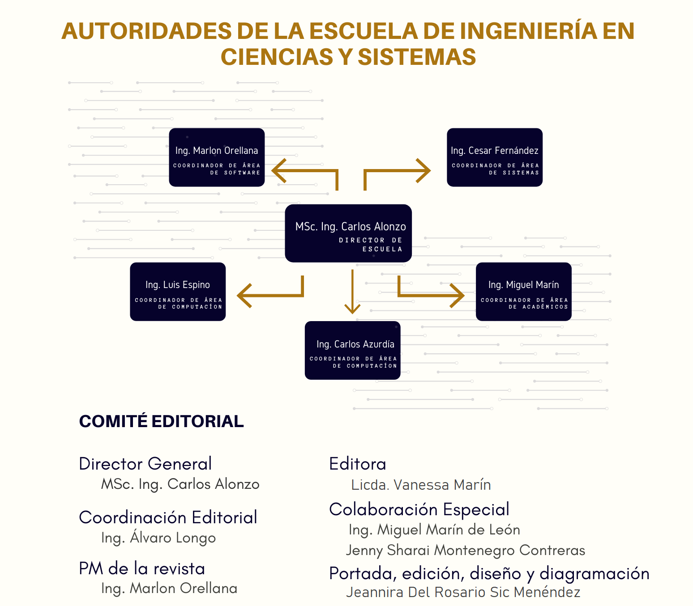

Editorial
1
Inteligencia Artificial: Herramientas de finalización de código
1.1
Artículo
1.2
Conclusión
1.3
Referencias
2
Todo lo que necesitas saber sobre la oportunidad de la década para desarrolladores: realidad virtual
2.1
Introducción
2.2
Conclusión
2.3
Referencias
3
Algoritmo salva vidas
3.1
Introducción
3.2
Conclusiones
3.3
Referencias
4
Como los algoritmos influencian el comportamiento humano
Referencias
5
Voto electrónico con “blockchain”: la unión entre la tecnología y la sociedad
5.1
Resumen
5.2
Palabras clave
5.3
Abstract
5.4
Keywords
5.5
Introducción
Planteamiento
5.6
Desarrollo
5.7
Conclusiones
5.8
Referencias
5.8.1
Sobre autor
6
Herramientas de docencia virtual como facilitadoras de aprendizaje durante la pandemia
6.1
Conclusiones
Referencias
7
¿Cómo aprender para enseñar? Técnicas de estudio y enseñanza
7.1
Introducción
7.2
Artículo
7.3
Conclusiones
Referencias
8
El desafio del docente virtual
8.1
Introducción
8.2
Conclusiones
Referencias
9
Análisis de dificultades para la educación virtual y propuesta de mejoras de los estudiantes de la escuela de ciencias y sistemas de la USAC
9.1
Resumen
9.2
Palabras clave
9.3
Introducción
Referencias
10
Evolución de las Pruebas de Conocimientos Básicos de la presencialidad a la virtualidad en época de pandemia
10.1
Conclusiones
Referencias
11
Entrevistas en tiempos de pandemia
11.1
Conclusiones
11.2
Referencias
12
El presente del trabajo del futuro
12.1
Introducción
12.2
Artículo
12.3
Conclusiones
12.4
Referencias
13
Desarrolladores, la indispensabilidad de la década
13.1
Introducción
13.2
Referencias
14
Automatizando el futuro: la evolución de los procesos actuales de negocio y como las herramientas como Rocketbot han evolucionado para adaptarse a las necesidades actuales
15
Relaciones interpersonales para sobrevivir en el mundo laboral
15.1
Introducción
15.2
Artículo
Conclusiones
Referencias
16
Motivación en tiempos de pandemia, retos y ventajas
16.1
Introducción
16.2
Artículo
16.3
Conclusiones
Referencias
17
Consejos para tener una vida balanceada
17.1
Referencias
18
Software para el control de vacunación en Guatemala
Referencias
19
Tendencias en tiempos de crisis: Predicciones, innovación y pertinencia de transformación tecnológica durante la pandemia de COVID-19
Referencias
20
Avance tecnológico y adaptación de las actividades cotidianas
Referencias
Facultad de Ingeniería - USAC
Revista digital de la escuela de ingeniería en Ciencias y Sistemas
Revista digital de la escuela de ingeniería en Ciencias y Sistemas
Escuela Ingenieria en Ciencias y Sistemas
2022-04-19
